Der Annotationsguide beschäftigt sich damit, Informationen zu Skills, Tasks, Berufen und Branchen in Stellenanzeigen zu finden. Hierfür markieren wir sogenannte Entitäten im Text der Stellenanzeigen und ziehen Relationen zwischen ihnen, um beispielsweise zu verstehen, mit welchem Arbeitsmittel ein bestimmter Arbeitsprozess ausgeführt wird.
Unser zentrales Interesse ist die ausgeschriebene Position bzw. die dafür gesuchten Bewerber*innen. Eigenschaften, die sich bspw. auf das Unternehmen oder Arbeitsinhalte beziehen, sind nicht zu annotieren. Eine Ausnahme hiervon stellt die Enität Branche dar, die sich explizit auf das Unternehmen bezieht.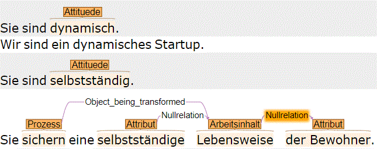
Die hier dargestellten Entitäten und Relation werden weiter unten ausführlicher behandelt. Die Beispiele sollen nur ein Grundverständis unseres Vorgehens vermitteln. Im ersten Beispielsatz bezieht sich dynamisch auf eine Charaktereigenschaft, die eine potentielle Bewerberin mitbringen soll. Dagegen bezieht sich dynamsich im zweiten Satz auf da Unternehmen, weshalb wir dynamisch in diesem Beispiel nicht annotieren.
Das letzte Beispiel gibt einen Überblick, wie Entitäten mit Relationen verbunden sein können. Dazu wurden recht kleinteilig unterschiedliche Textteile markiert und miteinander verbunden, mit dem Ziel gleiche oder ähnliche Informationen aus unterschiedlichen Stellenanzeigen im Anschluss leichter in Verbindung zu bringen. Die Aufgabe eines potentiellen Bewerbers in dem Beispiel ist es, eine selbstständige Lebensweise einer bestimmten Personengruppe zu sichern -der Bewohner. In einer anderen Stellenanzeige könnte beispielsweise die Sicherung der selbstständigen Lebensweise von Patienten gefordert sein. Die kleinteilige Markierung von Textstellen und deren Relation erlaubt es uns zu verstehen, dass es in beiden Fällen um die Sicheurng der selbstständigen Lebensweise geht und lediglich Unterschiede in der Personengruppe bestehen.
In Stellenanzeigen sind Tasks und Skills eng verwandt und können häufig als zwei Seiten einer Medaille verstanden werden (siehe auch Rodrigues et al. 2021). Von Tasks kann man auf Skills schließen, umgekehrt aber nicht. Zum Beispiel wird eine Task zum Skill, wenn man “Sie können” davorsetzt.
Die Extraktion von Tasks ist eines unserer zentralen Auswertungziele. Allerdings werden diese nicht direkt im Text markiert, sondern bestehen normalerweise aus einem Prozess und einem Arbeitsinhalt1. Technisch gesehen sind tasks diskrete Einheiten von Arbeit, also Arbeitsaufgaben, die im Rahmen wirtschaftlicher Aktivität Inputs in Outputs transformieren (Autor 2013, Rodrigues et al. 2021). Tasks können unterschiedliche Granularitäten aufweisen, die unter anderem von der Komplexität und der Organisation von Arbeit abhängen (Rodrigues et al. 2021: 6). Tasks können nach ihrem Inhalt (WAS?), den Aufgaben zugrundeliegende Methoden (WIE?), und Arbeitsmittel (WOMIT?) klassifiziert werden (z.B.: Fana et al. 2023). Die Arbeitsnachfrage am Arbeitsmarkt richtet sich selten auf einzelne tasks, sondern auf Berufe, die tasks kohärent bündeln (Fernández-Macías, Bisello, 2022).
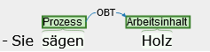
Im Beispiel Sie sägen Holz setzt sich der Task aus dem Prozess sägen und dem Arbeitsinhalt Holz zusammen. Es ist das Holz, welches im Verlauf des Prozesses sägen eine Veränderung erfährt (es ist in Bretter oder Ähnliches zerschnitten). Daher wird zwischen dem Prozess sägen und dem Arbeitsinhalt Holz die Relation object_being_transformed gezogen. Eine detailliertere Beschreibung der einzelnen Entitäten und deren Relationen erfolgt weiter unten.
Auch Skill werden bei uns nicht direkt im Text markiert, sondern setzen sich aus der Kombination verschiedener Entitäten und deren Relationen zusammen. Wir definieren Skills als die Fähigkeit, eine bestimmte Task erfolgreich erledigen zu können.
„Skill can be generally defined as the ability to perform a task well.“
(Rodrigues 2021)
Dementsprechend kann ein Skill beispielsweise durch die Kombination eines Erfahrungsniveaus2 mit einem Task beschrieben werden, wie das folgenden Beispiel verdeutlicht.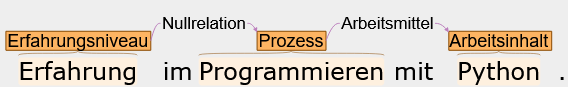
Der Prozess Programmieren und der Arbeitsinhalt Python bilden einen Task. In Kombination mit dem Erfahrungsniveau Erfahrung wird daraus ein Skill, nämlich die Fähigkeit in Python programmieren zu können.
Prozesse sind häufig (substantivierte) Verben.
Prozesse können auch Teil eines Kompositums -eines zusammengesetzten Wortes- sein.

Prozesse können miteinander verkettet sein, wobei der eine Prozess den Autonomiegrad des anderen angibt.

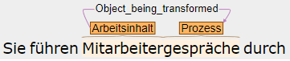


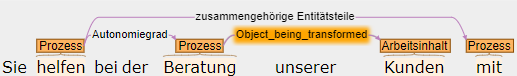
Bei koordinierten Verben, die zwei unterschiedliche Prozesse darstellen, werden diese getrennt annotiert und über die Relation Koordination verbunden.
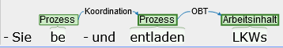
Prozesse können auch Adjektive sein, die von Verben stammen und häufig in Verbindung mit einem inhaltsleeren Füllwort wie Arbeiten oder Tätigkeiten stehen

Wenn Prozesse wie bei task beschrieben ohne Arbeitsinhalt vorkommen, stehen sie häufig alleine oder in Verbindung mit einem Attribut
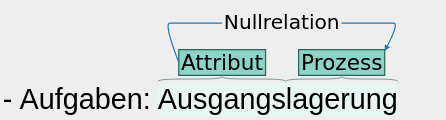
Ansprechpartner wird im nachfolgenden Beispiel als Prozess annotiert, da sich Ansprechpartner sein in gängige Taskdimensionen einordnen lässt.Gleiches gilt beispielsweise auch für Vorstandstätigkeit.


Ein Arbeitsinhalt beschreibt alle weiteren Entitäten, die neben dem Prozess erforderlicher Teil einer Task sind, um diese ausreichend konkret von anderen tasks abgrenzen zu können. Dabei werden über den Arbeitsinhalt zwei Dimensionen von tasks abgebildet: Womit wird gearbeitet? und an was oder mit wem wird gearbeitet? Ein Arbeitsinhalt kann einerseits ein Arbeitsmittel (womit) und andererseits ein (immaterieller) Gegenstand bzw. eine Person(engruppe) sein, der/die “bearbeitet” wird (“an was” oder “mit bzw. an wem” wird gearbeitet).
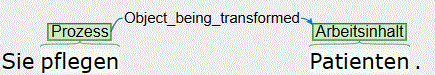

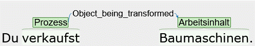
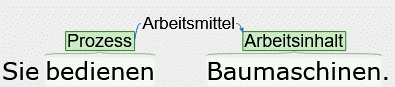
Die ersten drei Sätze sind Beispiele für “an was” oder “mit bzw. an wem” wird gearbeitet. Dies wird durch die Relation object_being_transformed verdeutlicht, auf die im Kapitel zu Relationen detaillierter eingegangen wird. Der letzte Satz gibt ein Beispiel womit gearbeitet wird. Ein Vergleich der Sätze drei und vier zweigt, dass ein Wort in dem einen Kontext ein Arbeitsmittel und in dem anderen ein object_being_transformed sein kann. In Satz drei wird an dem Verkauf der Baumaschinen gearbeitet, wohingegen in Satz vier die Baumaschine genutzt wird, um etwas anderes zu erstellen.
Arbeitsinhalte bestehen in der Regel aus einem Wort oder einem feststehenden Mehrwortausdruck wie z.B. MS-Office. Zusatzinformationen werden als Attribut ergänzt.
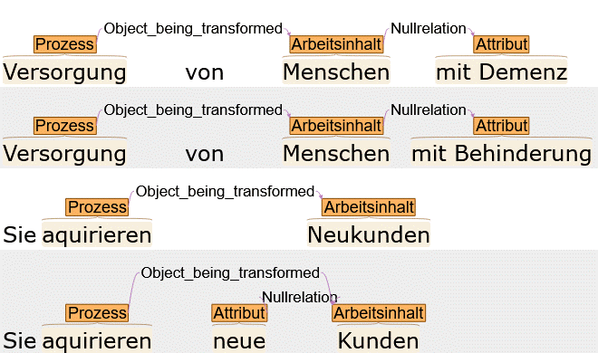
Arbeitsinhalte sind häufig Satzobjekt oder Teil eines Kompositums - eines zusammengesetzten Wortes.
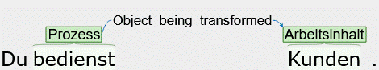
Arbeitsinhalte werden normalerweise über die Relationen Arbeitsmittel oder OBT (Object Being Transformed) mit einem Prozess verbunden.
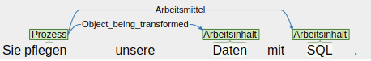
Standards und Konzepte sind Arbeitsmittel und daher Arbeitsinhalt.
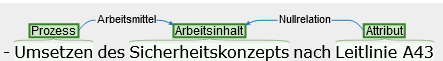
Sprachkenntnisse: Die Sprache wird als Arbeitsinhalt mit der Relation Arbeitsmittel annotiert, analog zu Konzepten oder Standards.


Verfahren: Verfahren sind Arbeitsinhalte, die mit Nullrelation auf Prozesse gemappt werden.

Zur Abgrenzung zwischen Arbeitsinhalten und Attributen
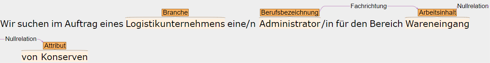
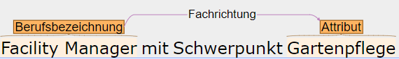
Ein Attribut spezifiziert eine andere Entität näher.
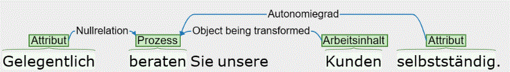
Ein Attribut kann nicht alleine stehen.
Eine Entität ist nur ein Attribut, wenn die entsprechende andere Entität alleine für sich stehen kann. Im Beispiel stellt “naturwissenschaftliches Studium” für sich eine formale Anforderung dar. Abgeschlossenes und wünschenswert beschreiben die Art der Qualifikation nur noch detaillierter.

Attribute werden nicht miteinander verkettet (außer die Relation ist Detail).

Attribute können daher auch längere Spans mit Zusatzinformationen sein, wenn sich diese nicht trennen lassen.

Bei Attributen mit Nullrelation werden Präpositionen (falls vorhanden) mit annotiert, um den Sinn zu erhalten. Im nachfolgenden Beispiel das Wort für.

Das Erfahrungsniveau gibt an, welche Art von Erfahrung ein potenzieller Arbeitnehmer im Beruf allgemein oder für eine bestimmte Task mitbringen muss.
Das Erfahrungsniveau kann sich auf den Job als ganzes oder einzelne tasks beziehen


Das Erfahrungsniveau wird typischerweise über Nomen (Kenntnisse, Erfahrung, Interesse) oder Verben (können, verstehen, wollen) ausgedrückt.

Zur Span des Erfahrungsniveau gehören auch Adjektive, die auf die Qualität der Erfahrung hinweisen.
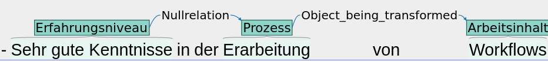

Falls diese Adjektive nicht unmittelbar vor Erfahrung, Kenntnisse etc. stehen, werden sie über die Relation ZET verbunden


Eine Attitüde bezieht sich auf die geistige Ausrichtung, Haltung, Einstellung oder Überzeugung, die eine Person gegenüber einer bestimmten Idee, Aufgabe oder Situation hat und schließt auch persönliche Eigenschaften wie Talente mit ein.
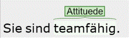
Arbeiten im Team wird dagegen nicht als Attitüde annotiert, da es sich eher um einen Arbeitsumstand als um eine Attitüde handelt

Wörter wie Arbeitsweise und Arbeit sind Worthüllen, die häufig eingesetzt werden, um eine Attitüde auszudrücken (z.B. strukturierte Arbeitsweise). Sie werden nicht mitannotiert.
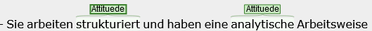
Adjektive wie selbständig oder kooperativ können sowohl als Attribut und als Attitüde auftreten. Wenn sie die Person oder deren Arbeit im Ganzen meinen, sind es Attitüden. Wenn sie sich hingegen auf einen Prozess beziehen, sind es Attribute, die den Autonomiegrad des Prozesses angeben.

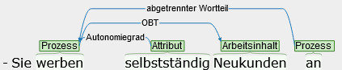
Jede Form von Bereitschaft ist eine Attitüde, weil mit dem Wort Bereitschaft die Haltung oder Einstellung der gesuchten Person beschrieben wird.
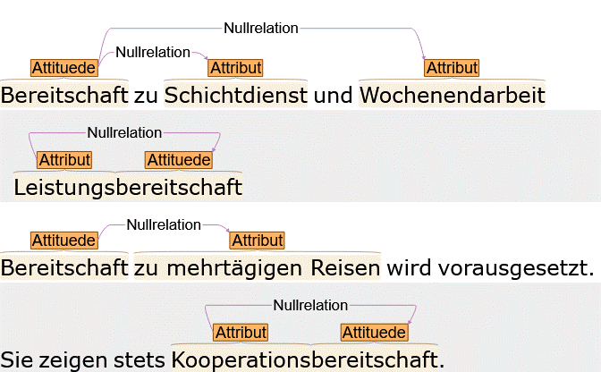


Eine Berufsbezeichnung benennt einen Beruf. Wir nutzen den Entitätstyp sowohl für Professionen und erlernte Berufe als auch Stellungen im Betrieb
<img src=“./images/ent_berufsbezeichnung_01.GIF” style=“height:50px”;>
Es sollen keine Quantifizier annotiert werden, die ausdrücken, wie viele Personen gesucht werden, also nur Maurer und nicht einen Maurer.
Die Zeichenkette von Berufsbezeichnungen soll so kurz wie möglich gehalten werden. Bei genderneutralen formulierungen wird immer die kürzeste Variante annotiert, also nur Maurer in der Zeichenkette Maurer/in, bzw. Angestellte in Angestellte/r.

Es werden auch Berufsbezeichnungen annotiert, die nicht zwingend der ausgeübte Beruf in der ausgeschriebenen Stelle sind, wie z.B. solche, die im Kontext von Ausbildungsabschlüssen stehen.

Auch Wörter, die die Stellung im Betrieb, wie Mitarbeiter, Fachkraft, Leiter usw. werden als Berufsbezeichnung annotiert. Sie werden oft von einem Attribut begleitet, welches die fachliche Komponente des Berufs beschreibt.
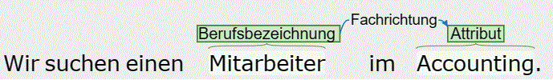
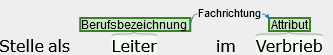
Fachliche Berufsbezeichnungen können aber auch mit denen, die die Stellung angeben, verkettet sein
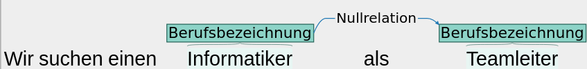
Bei koordinierten Berufsbezeichnungen werden diese immer getrennt als Koordination und nicht als eine Entität annotiert, auch wenn es sich dabei inhaltlich um einen Beruf handelt (wie bei Beton- und Stahlbetonbauer)

Die Branche bezieht sich auf den Wirtschaftszweig des Unternehmens, bei dem die Stelle angesiedelt ist. Diese stimmt nicht notwendigerweise mit der Branche des inserierenden Unternehmens überein (z.B. bei Arbeitsvermittlung bzw. Arbeitnehmerüberlassung). Häufig findet sich diese Information in der Unternehmensbeschreibung.


In einigen Fällen weichen Branche und Arbeitsort ebenfalls voneinander ab. Hier hilft die Frage, in welche (Betriebs-)Organisation die Stelle primär eingebunden ist.
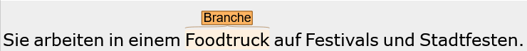
Abweichend vom sonsitgen Vorgehen, wird die Entität Branche immer für ein ganzes Wort markiert, auch wenn ein Wortteil schon reichen würde, um die Branche zu identifizieren. Dies soll die Annotationsarbeit erleichtern.

Eigennamen, wie beispielsweise Namen von Organisationen, werden nicht als Branche annotiert, auch wenn man daraus den Wirtschaftszweig lesen könnte.
DHL sucht neue Fahrer/innen.
Wir suchen im Namen der RheinEnergie neue Mitarbeiter/innen.
Textstellen, die den allgemeinen Charakter des Arbeitsorts beschreiben (z.B. draußen, im Freien, in der Halle, zuhause) werden nicht annotiert
Eine formale Qualifikation wird normalerweise von einer Institution wie einer IHK, Handelskammer, Universität, einer Fachschule oder einer Zertifizierungsstelle ausgestellt und dient als offizieller Nachweis für den Arbeitgeber oder andere Interessierte, dass eine Person über das erforderliche Wissen und die erforderlichen Fähigkeiten verfügt, um eine bestimmte Tätigkeit auszuführen. Für die Annotation spielt es jedoch keine Rolle wie “offiziell” die Zertifizierungsstelle ist. Es reicht, dass der AG sie nennt.
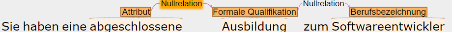


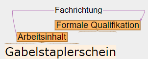


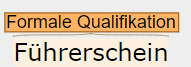

Relationen bilden Beziehungen zwischen Entitäten ab. Bei Relationen können folgende Typen unterschiedenen werden: ## Object being transformed (OBT) Das Object being transformed ist ein Gegenstand, eine Person oder ein Gedanke, der/die mit einem Prozess hergestellt, transformiert, bearbeitet oder adressiert wird.
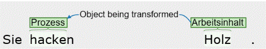
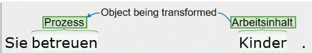
Diese Relation stellt dar, dass ein Prozess auf einen Arbeitsinhalt angewandt wird. Der Arbeitsinhalt kann dabei ein Gegenstand, eine Person(engruppe) oder ein Gedanke sein.

In einigen Fällen kann auch eine verkürzte Form auftreten, sodass nur ein Erfahrungsniveau zusammen mit einem Arbeitsinhalt genannt wird. Anhand der Art des Arbeitsinhalts bzw. des Kontexts muss dann entschieden werden, ob es ein OBT oder ein Arbeitsmittel ist.

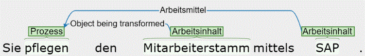
Diese Relation stellt dar, dass in einem Prozess ein Arbeitsinhalt eingesetzt wird. Der Arbeitsinhalt ist dabei typischerweise ein Werkzeug, eine Software oder ein Konzept/Standard.
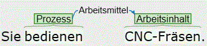
Konzepte, Normen und Standards sind Arbeitsmittel, sobald sie in einem Prozess eingesetzt werden.

Wie beim OBT kann auch hier eine verkürzte Form aus Erfahrungsniveau und Arbeitsinhalt auftreten. Anhand der Art des Arbeitsinhalts bzw. des Kontexts muss auch hier entschieden werden, ob es ein OBT oder ein Arbeitsmittel ist.

Die Relation Autonomiegrad drückt aus, dass eine Entität (häufig ein Attribut oder Prozess) den Autonomiegrad einer anderen Entität spezifiziert.

Der Autonomiegrad gibt an, wie autonom (d.h. selbstständig) ein Prozess durchgeführt wird. Autonomie kann sprachlich durch (substantivierte) Verben und durch Adjektive vermittelt werden.
Adjektive wie selbstständig, unterstützend oder eigenverantwortlich werden als Attribut markiert und über Autonomiegrad mit dem Prozess verbunden.

Der Autonomiegrad liegt nur dann vor, wenn etwas explizit von der “Norm”, dass man es selber macht, abweicht. Das Verb durchführen beispielsweise deutet darauf hin, dass die Person die Aufgabe selbst macht. Dasselbe gilt aber, wenn kein expliziter Hinweis auf den Autonomiegrad vorliegt. Es gibt hinsichtlich des Autonomiegrads für uns keinen Unterschied zwischen analysieren und Analysen durchführen.


Die Fachrichtung zeigt an, dass eine Entität, häufig ein Attribut, eine Spezifizierung der fachlichen Ausrichtung einer Entität wie formale Qualifikation oder Berufsbezeichnung darstellt.
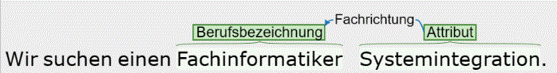


Bei einer Detailrelation spezifiziert eine Entität eine andere Entität, wobei die beiden Entitätstypen normalerweise identisch sind.


Die Oder Relation wird zwischen Entitäten gezogen, die als Alternativen in einer Stellanzeige aufgeführt sind.
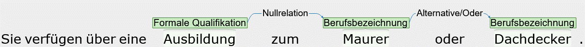
Bei mehreren Alternativen, wird immer nur die maximalst niedrige Anzahl an Alternativ-Relationen gezogen. Die anderen werden später inferiert. A->B und B->C, sodass A->C inferiert wird.

Die Relation oder wird nur dann gezogen, wenn explizit ableitet werden kann, dass es sich um Alternativen handelt z.B. durch die Verwendung des Wortes oder oder bzw.. Bei anderen Arten der Auflistung z.B. durch / oder , getrennt, werden die Enitäten nur einzelnd annotiert und keine oder-Relation gezogen, da nicht ausgeschlossen werden, kann dass es sich um eine und-Verkettung der Entitäten handeln könnte.
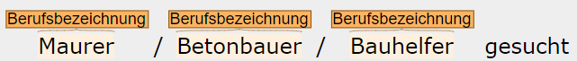


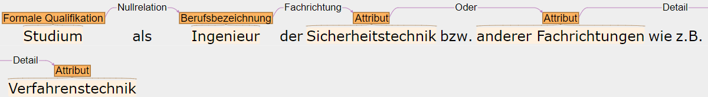
Die Dringlichkeit gibt an, wie wichtig eine Entität (meist Formale Qualifikation oder Erfahrungsniveau) für die ausgeschriebene Stelle ist.
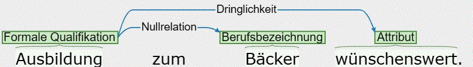


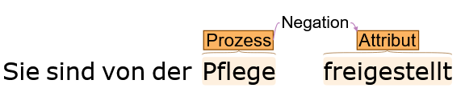
Keine nähere Spezifizierung der Relation zwischen zwei Entitäten notwendig/vorhanden.
Diese Relationen dienen dazu, mit bestimmten sprachlichen Eigenheiten umgehen zu können:
Diese Relation wird dazu verwendet, um Wörter oder Wortteile zu verbinden, die gemeinsam eine Entität bilden, aber syntaktisch voneinander getrennt sind.


Diese Relation wird verwendet, wenn durch (Morphem-)koordination der Teil eines Wortes weggelassen wird.
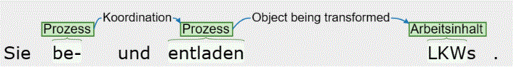

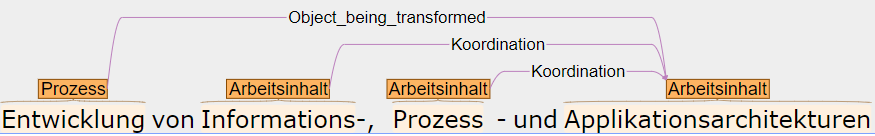
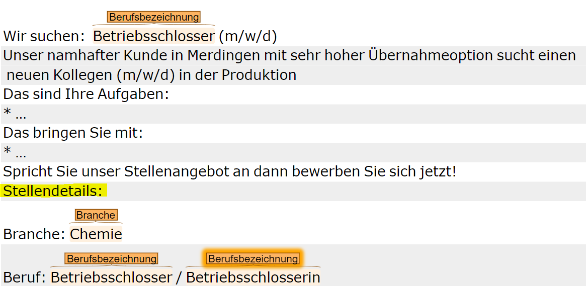
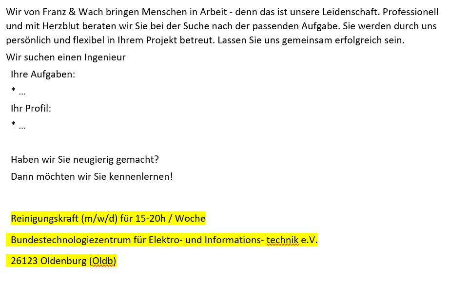
Entitäten werden immer als kleinstmögliche Sinneinheit annotiert. Das heißt, sie werden so knapp wie möglich, aber so lang wie nötig annotiert, um den Sinn zu erhalten. Relevante Zusatzinformationen können immer auch als Attribut annotiert werden.
Wörter wie Schwerpunkt, Bereich, usw. werden nicht mit annotiert. Die Bedeutung dieser Wörter wird über den Entitätstyp oder über Relationen abgebildet.

Präpositionen werden i.d.R. nicht mit annotiert. Die Bedeutung dieser Wörter werden über Relationen abgebildet. Eine Ausnahme bilden Attribute mit Nullrelation (Siehe Attribut).

Beinhaltet ein Wort mehrere Entitäten, wird das Fugen-S dem ersten Nomen zugeordnet. In nachfolgenden Beispiel Applikations.

Informationen in Stellenanzeigen zu Arbeitsaufgaben oder Anforderungen können teilweise unscharf, unvollständig, implizit oder vage formuliert sein. Nicht alle Informationen sind für die Extraktion relevant, daher stellen wir in Bezug auf unscharfe Informationen einige Regeln auf:
Unvollständige Auflistungen treten sowohl bei der Beschreibung von Arbeitsaufgaben als auch bei Formulierung von Anforderungen auf.

Eine Ausnahme bildet das folgende Beispiel, in dem Erfahrungen in ähnlichen Aufgaben eher als eine Art Berufserfahrung anzusehen ist

Im Gegensatz zu Arbeitsaufgaben deuten Formulierungen wie vergleichbare… bei Qualifikationen und Skills auf eine gewisse Flexibilität bei der Stellenbesetzung hin. Diese Information betrachten wir als relevant und soll annotiert werden.


Zusammenfassend sollen also unscharfe Informationen in Bezug auf Skills und Formale Qualifikationen annotiert werden und in Bezug auf Arbeitsaufgaben/Tasks ignoriert werden.
In einigen Fällen sind Entitäten ohne weitere Kontextinformationen völlig unverständlich. Zum Beispiel kann berufstypische Aufgaben semantisch nur aufgelöst werden, wenn man den jeweiligen Beruf kennt.
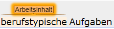
Relations-Pfeile werden grundsätzlich immer von links nach rechts gezogen.
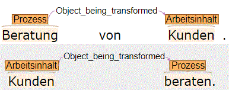
Eine Entität kann mit mehreren anderen Entitäten verknüpft sein. Im folgenden Beispiel wird jedes Prozess-Verb einzeln markiert und mit dem Arbeitsinhalt verbunden:
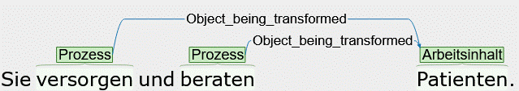
In manchen Fällen können Konjunktionen zu syntaktischer Ambiguität führen. Das heißt, dass nicht klar ist, auf wie viele Entitäten sich eine andere Entität bezieht. Im Beispiel kann sich sehr nur auf aufmerksam oder auch auf engagiert beziehen. In diesen Fällen wird die fragliche Entität nur mit der ersten in Frage kommenden Entität verknüpft (siehe Annotation im Beispiel).
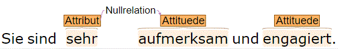
Bei Koreferenzen innerhalb eines Satzes werden Relationen zum ursprünglichen Wort und nicht zum Pronomen gezogen. Im folgenden Beispiel könnte verkaufen auch mit dem letzten sie verbunden werden. Weil damit aber die Kisten gemeint sind, wird verkaufen direkt mit Kisten verknüpft.
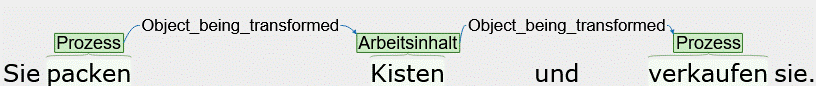


Während der Annotation sollen folgende Fragen eine Hilfestellung
bieten, um Entitäts- und Relationstypen besser zu finden. | Typ |
Hilfsfrage | | ——————– |———————-| | Prozess | Was ist die Aktivität? | |
Arbeitsinhalt | Mit wem, womit bzw. woran wird gearbeitet? | | Attribut
| Wird eine Entität mit einer Zusatzinformation näher beschrieben? | |
Erfahrungsniveau | Welche Art der Vorkenntnisse (inkl. Interesse)
braucht man?|
| Attitüde | Welche Eigenschaften braucht man für den Job? | |
Berufsbezeichnung | Wie heißt der gesuchte Beruf/die Stelle/Ausbildung
laut Ausschreibung?| | Branche | In welchem Wirtschaftszweig operiert
der Betrieb, bei dem die Stelle ausgeübt wird?| | Formale Qualifikation
| Welche Art von Zertifikat ist gefordert?| | | | Object Being
Transformed | An was/mit wem wird gearbeitet?| | Arbeitsmittel | Mittels
welchen Instruments wird etwas bearbeitet? Womit wird der Prozess
ausgeführt?| | Autonomiegrad | Wie (un-)eigenständig wird der Prozess
ausgeführt?| | Fachrichtung | Wie wird die gesuchte
Qualifikation/Berufsbezeichnung weiter spezifiziert?| | Detail | Werden
untergeordnete Beispiele für eine übergeordnete Entität aufgezählt?| |
Oder | Werden Alternativen aufgezählt?| | Dringlichkeit | Beschreibt das
Attribut, wie notwendig eine Qualifikation/ein Erfahrungsniveau ist?| |
Negation | Beschreibt das Attribut, dass ein Prozess nicht ausgeführt
wird?| | Nullrelation | Ist die Relation zwischen den Entitäten a)
eindeutig oder b) nicht über die anderen Relationen abgedeckt?|
Hier werden Beispiele eingefügt, die wir im Laufe derzeit sammeln, weil wir denken, dass sie hilfreich sind.
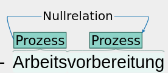


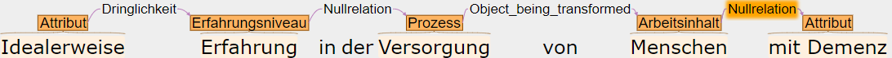